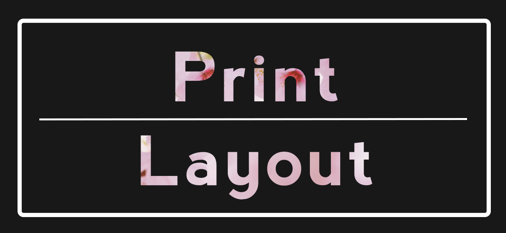

Home | Raster | Vector | Time Base Media | Print Layout | Social Media
This is my final assignment for the inDesign portion of this course, it is a brochure that I have created containing all of my previous works as seen in the other sections of this site. For this design, I wanted to go with something both simplistic and cute, so I went with a scrapbook type booklet, there's a mix of both polaroid and postcard style. Although I feel like there are difficulties reading it, I had initially thought it would be easier to view this as a physical design rather than digital.